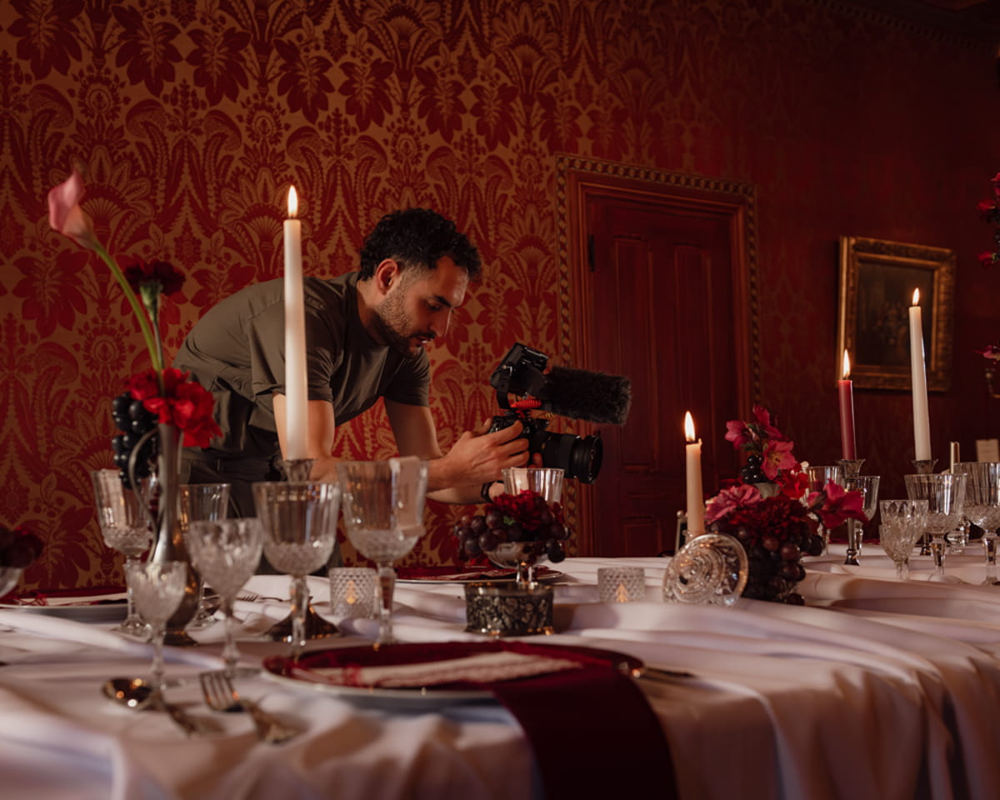

Discrétion absolue
Je suis présent sans m'imposer. Vous ne me verrez pas, vous vous verrez, plus tard, sincères.

Réalisateur & vidéaste — basé en Sologne, Vallée de la Loire.
Mon métier, disparaître pour mieux raconter.
Soyez vous-mêmes
Je m'occupe d'en faire un film.
Ils guident chaque film, quel que soit l'univers.
Je suis présent sans m'imposer. Vous ne me verrez pas, vous vous verrez, plus tard, sincères.
Pas de flashs, pas d'artifice. Je travaille avec ce que la journée offre, et c'est suffisant.
Je ne mets pas en scène. Je capte ce qui est, dans l'instant, sans direction artificielle.
Vos films ne suivent pas les modes. Ils traversent le temps comme vos souvenirs.
De la première caméra aux châteaux d'aujourd'hui.
Création de Qualimatic Production. Premiers films de mes voyages, premières émotions capturées, et une envie de plus en plus nourrissante.
Affirmation d'un style : films cinématographiques, lumière naturelle, montages intemporels. La colorimétrie devient une signature reconnaissable.
Affirmation d'un style, films cinématographiques, les débuts dans le monde du mariage.
Premiers châteaux et lieux d'exception. Le bouche-à-oreille s'installe.
Une dizaine de mariages par an. Toujours seul derrière l'objectif, toujours fidèle à la même exigence.
Jamais l'inverse.
Boîtiers Sony plein format, capables de capter la lumière la plus subtile.
Une sélection d'objectifs lumineux pour un rendu cinématographique.
Drone classique pour les vues larges, drone FPV pour des plans uniques. Certifié télépilote.
Micros HF discrets pour les vœux, ambiances captées en multipiste, sans intrusion.
Plus de 30 mariages célébrés depuis 2023. Des couples du Centre-Val de Loire à la France entière.
Et si on échangeait vingt minutes sur votre projet
Sans engagement, sans devis automatique — un vrai dialogue.